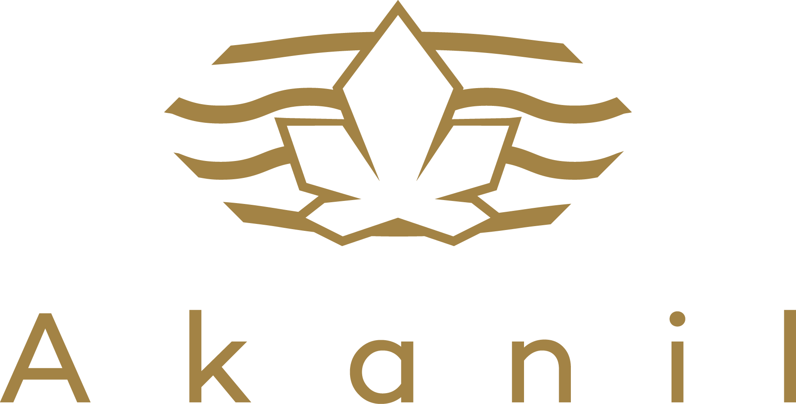
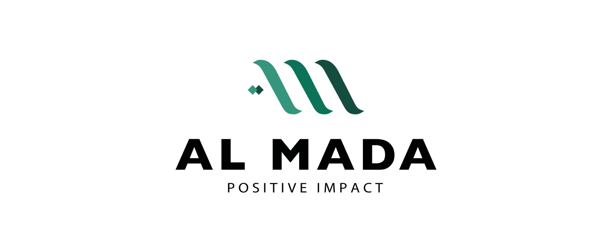

La gouvernance numérique d'un portefeuille minier stratégique.
Infrastructure, pas application. Lisibilité, pas reporting.
— et sa filiale Managem


Sept mouvements, une seule infrastructure.
Un système qui vend la gouvernance par la preuve doit lui-même être gouverné par la preuve. Ce n'est pas une hypothèse — c'est une condition.
Les portefeuilles miniers n'ont pas un problème de valeur.
Ils ont un problème de lisibilité.
Il y a une question que les directions stratégiques des grandes holdings minières ne posent jamais à voix haute — parce que la réponse est inconfortable. Combien de temps faut-il pour transformer une opportunité minière en data explorable ?
Si la réponse se compte en semaines, le problème n'est pas la qualité des actifs. Les actifs de Managem ont une valeur réelle, construite sur des décennies de présence terrain sur plusieurs régions. Le problème est que cette valeur reste invisible jusqu'à la due diligence — un moment où il est trop tard pour la construire en continu.
Il se lit avec les données de celui qui sait ce qu'il tient.
HYRION est l'infrastructure qui permet à un portefeuille de la taille de Managem de parler ce langage couramment.
AKANIL n'est pas une entreprise qui a étudié les marchés extractifs.
C'est une institution construite en les traversant.
Douze ans d'opérations continues — à travers des cycles politiques, des instabilités économiques, des environnements réglementaires changeants. Le type de trajectoire qui ne s'invente pas en pitch deck.
En 2023, AKANIL a structuré et obtenu cinq titres miniers dans la région de Béni Mellal au Maroc — quatre permis de recherche et une licence d'exploitation active, tous renouvelés jusqu'en 2030. Cela signifie que le fondateur ne documente pas le secteur extractif — il y opère.
- Géologues de terrain avec expérience multi-pays
- Data scientists spécialisés dans l'analyse minérale
- Architectes de systèmes d'information appliqués aux opérations minières
- Juristes familiers du droit minier marocain et régional
Quatre fonctions.
Non négociables pour un portefeuille de l'échelle de Managem.
HYRION n'est pas un système qui attend d'être déployé. Il est en opération sur le portefeuille ATLAS — cinq sites minières réels au Maroc, depuis dix-huit mois.
Index d'évidence
Data Room contrôlée
Portes de décision
Vue consolidée du portefeuille
Quatre dimensions.
Du chantier interne au leadership régional.
Ce que HYRION a fait pour cinq sites dans le Haut Atlas marocain, il peut le faire pour un portefeuille de la taille de Managem. La différence n'est pas de degré — c'est une augmentation de périmètre.
Gouvernance interne de Managem
Le délai de préparation d'une data room complète passe de semaines à heures. Pas parce que le travail disparaît — mais parce qu'il a été fait en continu, pas en urgence avant chaque demande.
semaines → heures
Le pont marocain-saoudien
Le capital saoudien arrive avec un cahier des charges précis : gouvernance documentée, traçabilité des données, standards de due diligence alignés sur les pratiques institutionnelles. HYRION crée ce pont sans rétraduction.
L'extension africaine — transformer les actifs en actifs finançables
Les actifs miniers africains souffrent d'un déficit de confiance structurel sans rapport avec leur valeur intrinsèque. Il est lié à la perception de leur gouvernance.
AKANIL dispose de réseaux opérationnels réels dans les géographies minières africaines — construits sur des années, pas sur des projets. Ce réseau, combiné à l'infrastructure HYRION, crée un actif nouveau : la finançabilité.
Leadership dans la gouvernance minière numérique au Maroc
Les termes du partenariat stratégique maroco-saoudien dans le secteur minier ne sont pas encore fixés. Les acteurs qui établissent les standards de gouvernance numérique marocains en ce moment seront les référents régionaux dans trois ans.
Al-Mada possède la taille, l'histoire et le portefeuille pour être le référent marocain — puis régional.
Trois phases. Une logique :
chaque phase produit une valeur indépendante qui justifie la suivante.
Al-Mada ne rachète pas HYRION — elle co-construit la version adaptée à son portefeuille. Et obtient, en contrepartie, un droit exclusif de déploiement pour la région MENA et l'Afrique.
L'audit HYRION sur un actif Managem
Déploiement pilote
Partenariat stratégique
Un mandat. Pas un emploi.
Une relation indexée sur les résultats — pas sur le poste.
Un mandat de douze mois renouvelables avec des livrables mesurables. AKANIL reste opérationnellement indépendante — sa crédibilité régionale en dépend.
Périmètre du mandat
- →Conception et déploiement de HYRION dans la structure Al-Mada
- →Pilotage de la stratégie de pont Maroc – Arabie Saoudite — interface avec PIF, Manara, Ma'aden
- →Développement des modèles de partenariat trilatéraux (Al-Mada × AKANIL × partenaire saoudien)
- →Mesure et reporting d'impact : gouvernance, positionnement, transactions
Structure
- ·Mandat de conseil (retainer) — pas d'emploi
- ·Durée : 12 mois renouvelables
- ·KPIs clairs liés aux phases de déploiement
- ·Liberté opérationnelle maintenue pour AKANIL
Vous n'ajoutez pas un employé. Vous accédez à un réseau opérationnel régional, à une expertise qui n'existe pas en interne, et à une méthodologie construite sur le terrain — liée à des résultats réels, pas à une promesse de changer le secteur.
Notre crédibilité dans la région repose sur notre indépendance. Un ancrage institutionnel avec Al-Mada renforce notre positionnement sans compromettre notre liberté de mouvement.
c'est un cadre pour une relation construite sur les résultats, pas sur le titre.
Nous n'avons pas décrit un système qui pourrait fonctionner.
Nous avons décrit un système qui fonctionne.
Nous construisons son index d'évidence en trente jours.
Vous évaluez le résultat. La décision vous appartient entièrement.